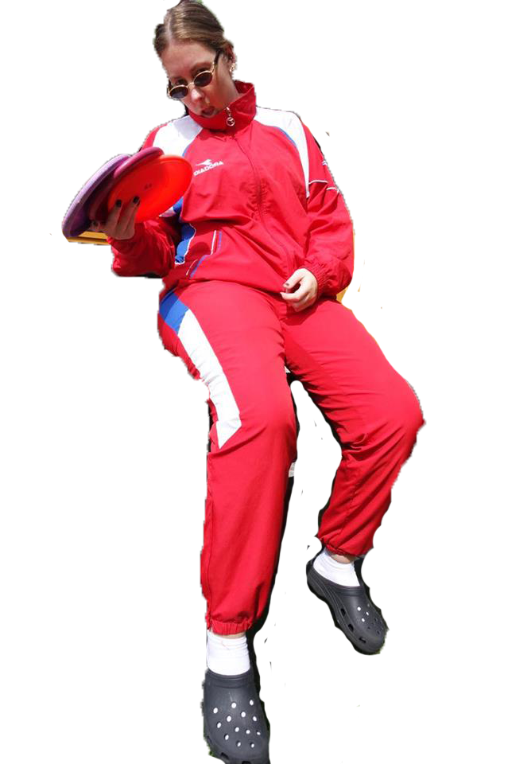
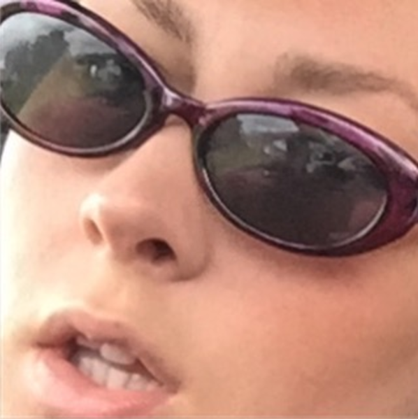

Jeg er en kreativ sjel, som gjenspeiles på flere steder.
Gikk tekstil på vgs, og var usikker på hva jeg skulle studere videre.
Om det skulle være klær, eller tekstil eller musikk. Fikk høre mye bra om Interaksjon, fra studenter på skolen, og jeg ble nysgjerrig.
Det er en av grunnene til at jeg valgte akkurat dette.
Jeg ser frem til å mestre det tekniske, bli trygg på prosessen og bli stolt av å fullføre.
Du kan se på høyre side, at jeg spiller diskgolf. Frisbee istedenfor golfballer! HVor fantastisk er ikke det!?!
For at jeg skal trives på skolen er det viktig at jeg får meg venner og at jeg liker det jeg studerer. :-)
